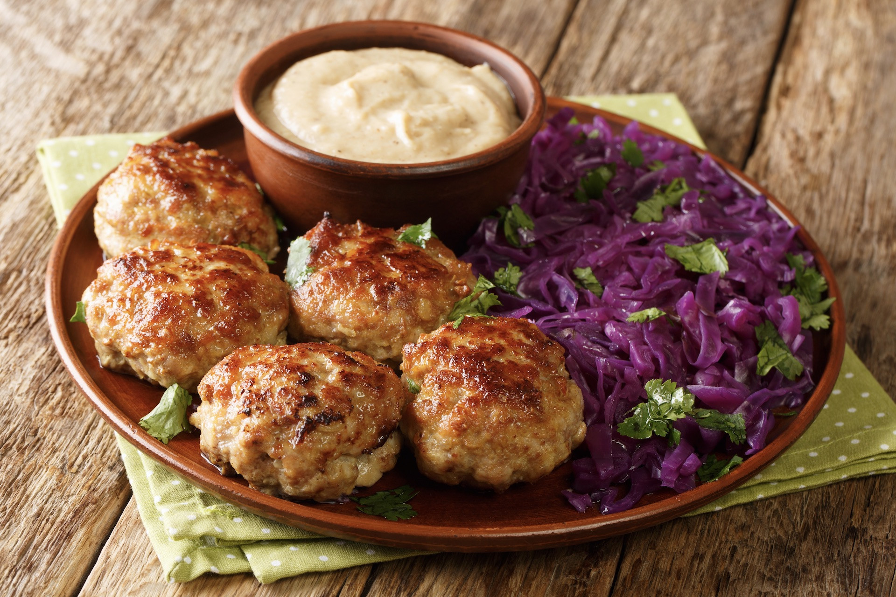
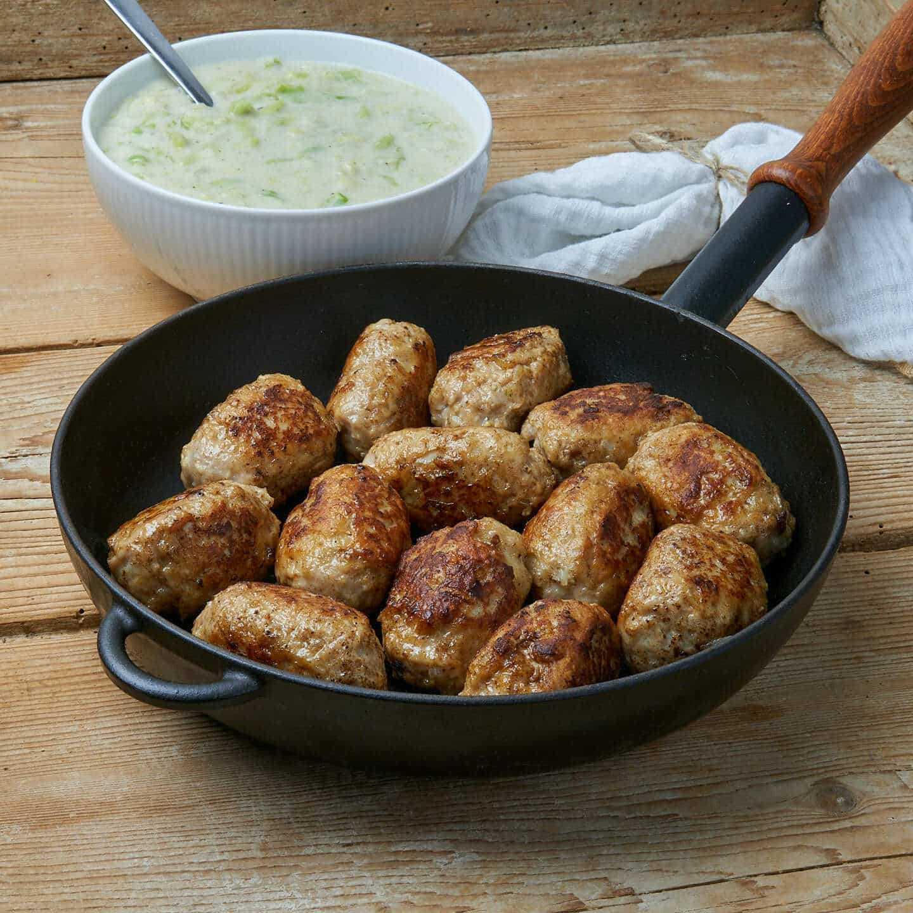
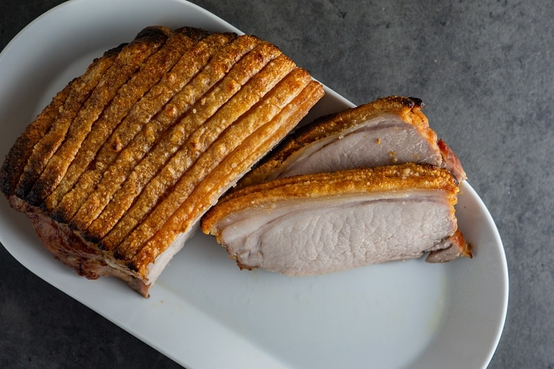
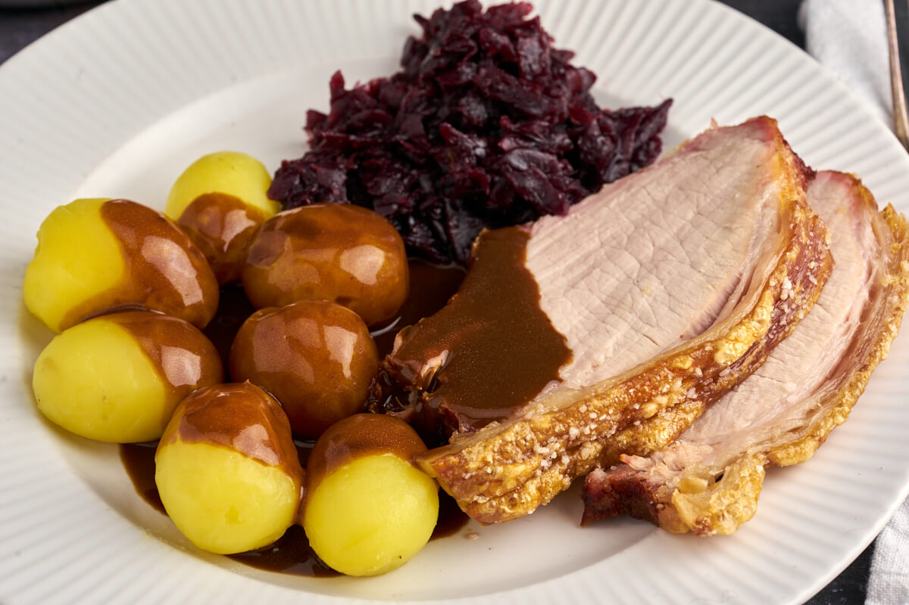
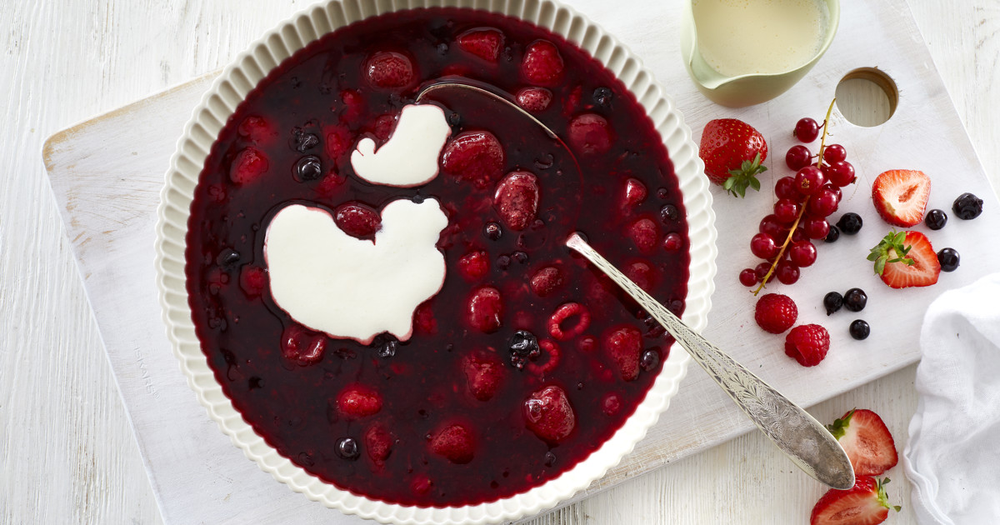
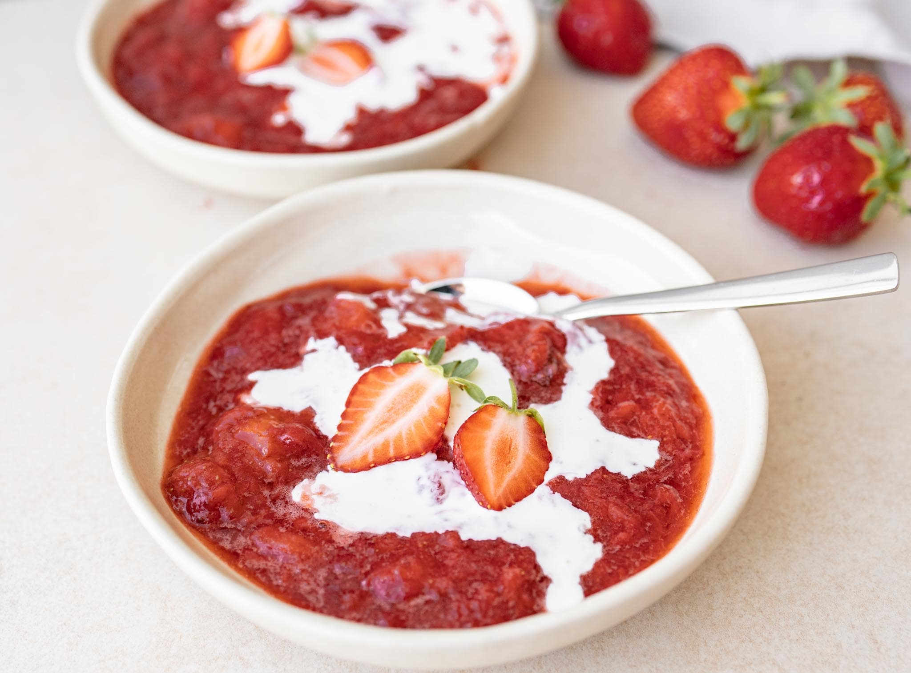
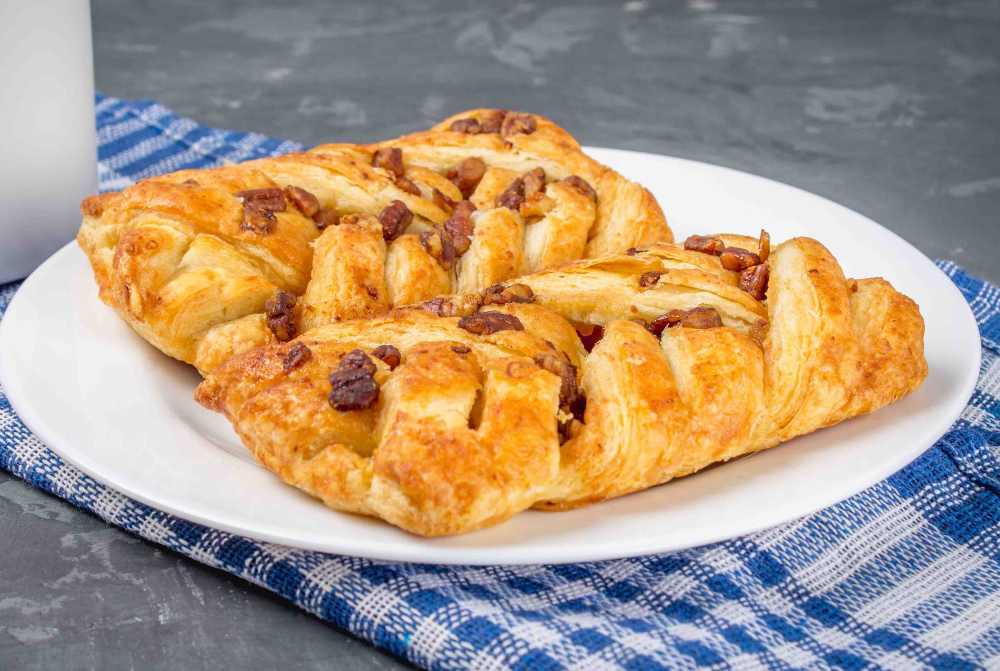
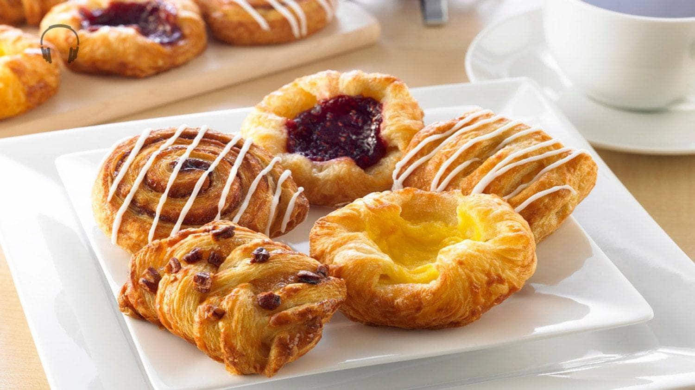
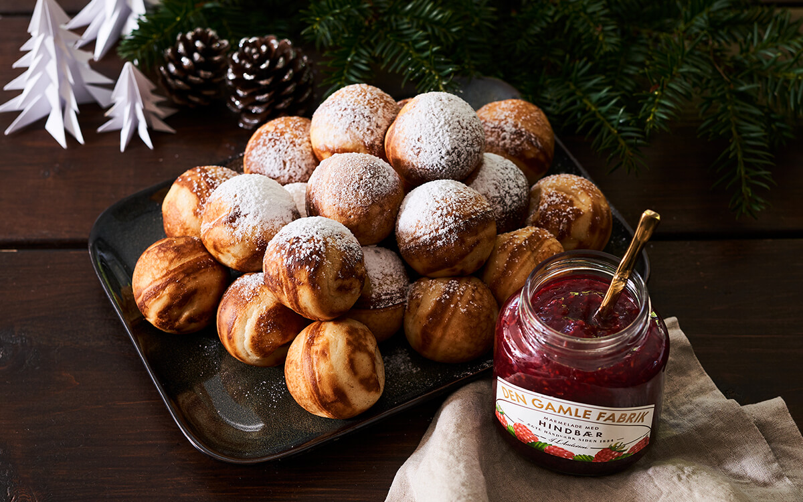
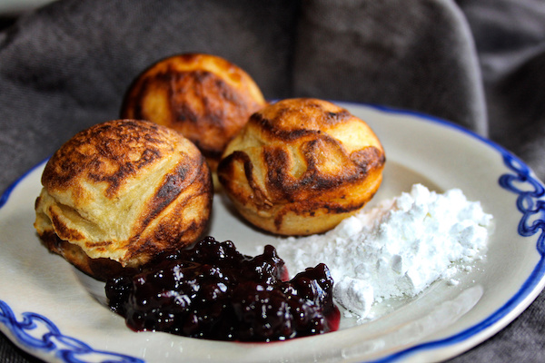

Smørrebrød isn’t just an open-faced sandwich — it’s a taste of Danish tradition. Crisp, hearty rye bread is topped with fresh fish,
cured meats, cheeses, or seasonal vegetables, creating a colorful, flavorful bite every time. Elegant yet simple, it’s a dish meant to
be savored slowly, often shared over coffee or a light lunch. Every piece reflects Denmark’s love for local ingredients, clean flavors,
and timeless craftsmanship — a true taste of Danish culinary culture.
Frikadeller


Frikadeller aren’t just meatballs — they’re a beloved Danish comfort food. Juicy, seasoned pork or beef patties are pan-fried to golden
perfection, delivering a satisfying crunch outside and tender, flavorful inside. Traditionally served with potatoes, pickled
vegetables, or rye bread, they bring families together over hearty, comforting meals. Every bite tells a story of local ingredients,
generations of care, and the timeless charm of Danish home cooking — a true taste of Denmark.
Flæskesteg


Flæskesteg isn’t just roast pork — it’s a centerpiece of Danish tradition. Tender pork with perfectly crispy crackling is roasted with
aromatic herbs, often served with caramelized potatoes and red cabbage. Elegant, hearty, and comforting, it’s a dish that brings
families together during festive gatherings and Sunday dinners. Every bite tells a story of careful preparation, local ingredients,
and the timeless flavors of Denmark — a true taste of Danish culinary heritage.
Rødgrød med fløde


Rødgrød med fløde isn’t just a dessert — it’s a sweet taste of Danish summer. A vibrant, velvety compote of red berries served with a
splash of rich cream, it’s light, refreshing, and utterly comforting. Traditionally enjoyed in warm months, every spoonful bursts with
the flavor of sun-ripened fruits and centuries of Danish culinary tradition. Simple yet elegant, Rødgrød med fløde captures the joy of
local ingredients, seasonal freshness, and the timeless charm of Denmark.
Wienerbrød (Danish pastry)


Wienerbrød isn’t just a pastry — it’s a sweet emblem of Danish tradition. Flaky, golden layers of buttery dough cradle fillings like
custard, jam, or chocolate, baked to perfection and often glazed with a delicate icing. Light, elegant, and utterly indulgent, it’s a
favorite in bustling cafés and cozy bakeries alike. Every bite tells a story of craftsmanship, local ingredients, and centuries of
culinary heritage — a true taste of Denmark in every mouthful.
Æbleskiver


Æbleskiver aren’t just pancakes — they’re a beloved Danish treat. Light, fluffy, spherical pancakes are traditionally dusted with
powdered sugar and often served with jam, creating a sweet, comforting bite every time. Enjoyed especially during holidays and cozy
gatherings, they bring friends and family together over laughter and warmth. Every bite carries the joy of Danish tradition, local
flavors, and centuries of culinary care — a small, round taste of Denmark’s heart.